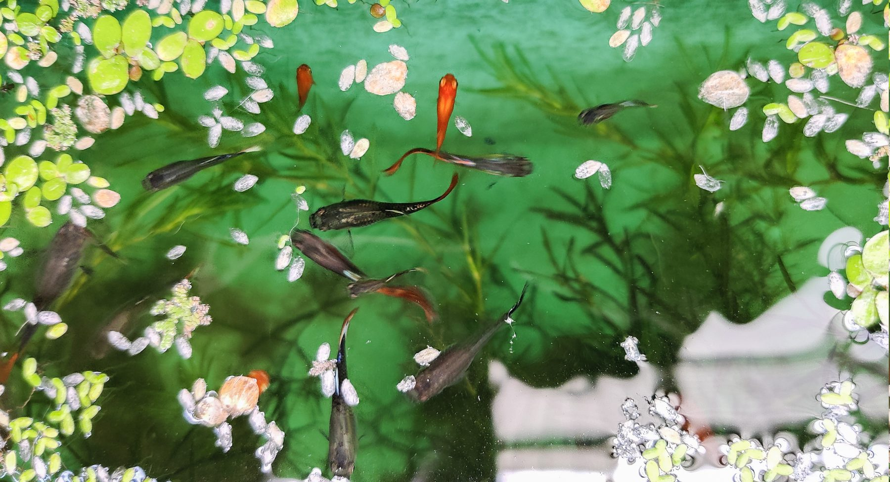

About Me
CVHello, I'm Aswin R Nair! I am currently a Research Assistant at the Raman Research Institute in Bengaluru. I graduated with a bachelor's in physics and master's degree in astrophysics from the Indian Institute of Science Education and Research, Mohali, India in 2025.
I have worked on various numerical simulations that deal with diverse astrophysical phenomena, where I use both analytical (equations and stuff) and computational methods (simulations and stuff) to model and understand these systems. Currently, I create simulations for radiative transport in the astrophysical medium. My masters thesis used fluid simulation to understand how gas falls onto Neutron stars. You can read more about these simulations here.
I was part of the BlueDot Impact Technical AI safety May 2026 cohort. I have a personal project that involves understanding what we can learn from activation directions extracted from different evaluation datasets. My latest work involved investigating "Can Models learn to hide activations, without being taught to" as part of the BlueDot Impact Technical AI safety project.
Website design inspiration
I love watching my pet Guppy fish swim around in their pond.They always swim around pretty peacefully, until you drop their feed in. Their random yet purposeful swimming pattern seemed like an interesting system to simulate and I wanted to capture that magic in this website.
